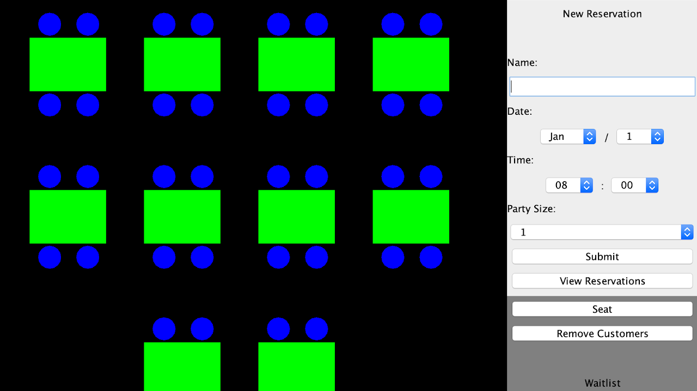

Restaraunt Management System
Java
This is a system to be used
by the host/hostess of a restaraunt. It uses visuals to display
which tables are available, taken, or reserved. Users can add
to a walk-in waitlist, take reservations, and seat customers
according to the waitlist.